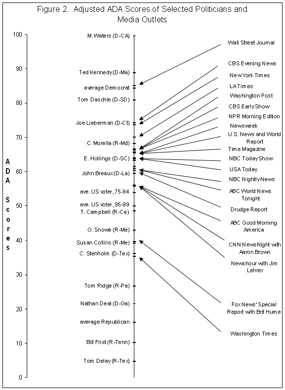

Media Outlets
Media Bias
The Presentation of Political News
The Two-Step Flow of Political Information
Media Effects on Popular Opinion
Newspapers
Dominant form until 20th century.
Circulation in decline since World War II.
Radio
Television
Dominant source today, but share in decline.
The Internet
Ideological Bias
“Liberal” and “conservative” media outlets.
Reporters are overwhelmingly liberal.
Corporate/Pro-Capitalist Bias.
The mass media is a business.
Media ownership tends to be conservative.
Negativity Bias
“If it bleeds, it leads.”
Simplicity Bias
Media prefers “personality” stories and simple narratives instead of complex issues.
Professional Bias
Journalists rely on other journalists for expertise and information.
 Source: Tim Groseclose and Jeffrey Milyo. 2005. “A Measure of Media Bias.” The Quarterly Journal of Economics 110(4): 1191-1237
Personality-driven.
Emphasis on the president and governors, less emphasis on legislators and courts.
Accentuates negative news.
Emphasis on “horse-race” coverage and “character” instead of issues.
Breaking news emphasized over long-term stories.
Manipulated by political “spin” by campaigns.
Media coverage is based on commercial pressures:
Ratings and circulation drive coverage.
Mass public is not interested in most issues.
Continuous news cycle driven by news networks (CNN, Fox News, MSNBC) and the Internet.
Positive: more in-depth news coverage available to those who seek it out.
Negative: only those who seek it out benefit.
Political information moves from political elites to the mass public in two stages:
Opinion leaders (political activists, major media organizations) decide on a narrative.
The mass public responds to the narrative(s) given by opinion leaders.
Politicians occasionally try to talk directly to the mass public (when they perceive opinion leaders to be hostile), but this is usually ineffective.
Agenda setting (and gatekeeping)
What the media covers—or doesn't cover—influences what people think is important.
Priming
Voters think about issues and candidates based on the context they are discussed in.
Framing
How arguments are made influences how people think about issues and candidates.
Political science research says:
Highly knowledgeable voters filter out information they disagree with, or can make arguments against it.
Least knowledgeable voters do not pay attention to the media in the first place.
Mid-range voters tend to be the most influenced.
The less people care about an issue, the more the media will influence their attitudes.
The text and narration of these slides are an original, creative work, Copyright © 2000–15 Christopher N. Lawrence. You may freely use, modify, and redistribute this slideshow under the terms of the Creative Commons Attribution-Share Alike 4.0 International license. To view a copy of this license, visit http://creativecommons.org/licenses/by-sa/4.0/ or send a letter to Creative Commons, 444 Castro Street, Suite 900, Mountain View, California, 94041, USA.
Other elements of these slides are either in the public domain (either originally or due to lapse in copyright), are U.S. government works not subject to copyright, or were licensed under the Creative Commons Attribution-Share Alike license (or a less restrictive license, the Creative Commons Attribution license) by their original creator.
The following sources were consulted or used in the production of one or more of these slideshows, in addition to various primary source materials generally cited in-place or otherwise obvious from context throughout; previous editions of these works may have also been used. Any errors or omissions remain the sole responsibility of the author.